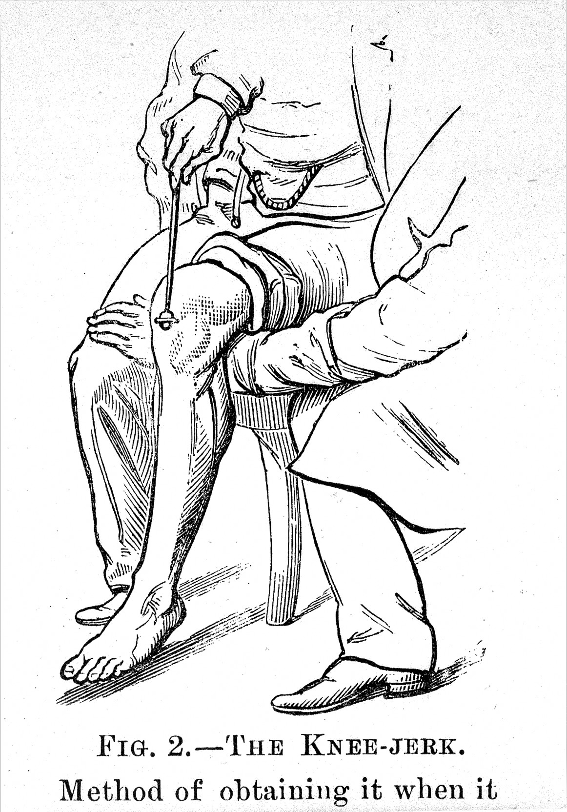

神经调节的基本方式
本期导读
反射 · 反射弧 · 条件反射
视频原话 · 导读3 句
- 同学们好！这节课梳理人教版选择性必修一第二章第二节——神经调节的基本方式。8.1s
- 这一节高考常考反射弧的结构与判断、反射弧受损的分析，以及条件反射与非条件反射。8.9s
- 我们按七个考点梳理，每个考点都讲清楚怎么考、怎么做。5.6s
反射的概念01#
神经调节的基本方式：反射
在中枢神经系统参与下，机体对内外刺激所产生的规律性应答反应
完成反射的两个条件
1完整的反射弧
2适宜的刺激

易错
草履虫没有神经系统，对刺激的反应不是反射
直接刺激传出神经引起肌肉收缩，反射弧不完整，不是反射
直接刺激传出神经引起肌肉收缩，反射弧不完整，不是反射
视频原话5 句
- 考点一，反射的概念。神经调节的基本方式是反射。5.9s
- 反射是指在中枢神经系统参与下，机体对内外刺激所产生的规律性应答反应。7.5s
- 比如医生用小锤叩击膝盖下方的韧带，小腿会突然弹起，这就是膝跳反射。7.4s
- 完成反射需要两个条件：一是完整的反射弧，二是适宜的刺激。6.2s
- 易错：草履虫没有神经系统，它对刺激作出的反应不是反射；直接刺激传出神经引起肌肉收缩，没有经过完整的反射弧，也不是反射。12.6s
反射弧的组成02#
1
感受器
接受刺激，产生兴奋
2
传入神经
把兴奋传向神经中枢
3
神经中枢
分析和综合信息
4
传出神经
把兴奋传向效应器
5
效应器
作出应答
易错
效应器 = 传出神经末梢 + 它所支配的肌肉或腺体
视频原话7 句
- 考点二，反射弧。反射的结构基础是反射弧，由五个部分组成。6.8s
- 感受器接受刺激，产生兴奋；3.3s
- 传入神经把兴奋传向神经中枢；3.7s
- 神经中枢对传入的信息进行分析和综合；4.6s
- 传出神经把兴奋传向效应器；3.5s
- 效应器作出应答。2.2s
- 易错：效应器不只是肌肉或腺体，而是传出神经末梢和它所支配的肌肉或腺体。8.0s
传入与传出神经的判断03#
方法一：看神经节
有神经节 → 传入神经方法二：看脊髓灰质
连前角（宽）→ 传出；连后角（窄）→ 传入方法三：看突触
兴奋只能由轴突末梢传向下一个神经元方法四：切断实验
刺激中枢端有反应 → 传入；刺激外周端有反应 → 传出解题方法
先用神经节或前角、后角定方向，再依次标出：感受器 → 传入神经 → 神经中枢 → 传出神经 → 效应器
试一试：判断下面每条依据说明的是传入神经还是传出神经。
- 1该神经上有一个膨大的神经节传入神经：神经节位于传入神经的背根上，这是最直接的依据。
- 2该神经的末梢连接脊髓灰质前角（较宽的一侧）传出神经：连前角的是传出神经，连后角（较窄）的是传入神经。
- 3切断后刺激中枢端，效应器出现反应传入神经：刺激中枢端能经中枢传到效应器，说明兴奋由它传入中枢。
- 4切断后刺激外周端，效应器出现反应传出神经：刺激外周端直接引起效应器反应，说明它是传出神经。
视频原话6 句
- 考点三，怎样判断传入神经和传出神经？这是高频考点，常用四种方法。7.8s
- 方法一，看神经节：有神经节的是传入神经。4.9s
- 方法二，看脊髓灰质：与前角，也就是较宽大的一侧相连的是传出神经；与后角，较狭窄的一侧相连的是传入神经。11.1s
- 方法三，看突触：兴奋在突触处只能由一个神经元的轴突末梢，传向下一个神经元，顺着这个方向，就能分出传入和传出。11.4s
- 方法四，切断实验：切断某条神经，刺激它靠近中枢的一端，效应器有反应，说明它是传入神经；刺激靠近效应器的一端有反应，它就是传出神经。14.0s
- 解题方法：先用神经节或前角、后角确定方向，再按“感受器→传入神经→神经中枢→传出神经→效应器”依次标出五个部分。13.1s
反射弧受损的分析04#
- 兴奋
- →脊髓
- →大脑皮层
- →形成感觉
- 兴奋
- →传出神经
- →效应器
- →作出反应
| 受损部位 | 感觉 | 反应 |
|---|---|---|
| 感受器、传入神经或神经中枢 | ✗ 无 | ✗ 无 |
| 传出神经或效应器 | ✓ 有 | ✗ 无 |
| 脊髓中通向大脑的传导通路（如高位截瘫） | ✗ 无 | ✓ 有 |
考法
“有感觉、无反应” → 传出神经或效应器受损；“无感觉、有反应” → 通向大脑的传导通路受损
视频原话5 句
- 考点四，反射弧受损的分析。抓住两点：感觉在大脑皮层形成，反应由效应器完成。8.7s
- 如果感受器、传入神经或神经中枢受损，兴奋传不上去，既没有感觉，也没有反应。8.3s
- 如果传出神经或效应器受损，兴奋仍能经脊髓传到大脑皮层，所以有感觉，但没有反应。8.7s
- 如果脊髓里通向大脑的传导通路受损，反射弧本身完整，就没有感觉，但有反应，比如高位截瘫的病人仍有膝跳反射。11.1s
- 考法：题目说“有感觉、无反应”，受损部位在传出神经或效应器；“无感觉、有反应”，受损的是通向大脑的传导通路。11.4s
非条件反射与条件反射05#
| 非条件反射 | 条件反射 | |
|---|---|---|
| 形成 | 出生后无须训练就具有 | 后天学习和训练形成 |
| 举例 | 膝跳、眨眼、缩手；吃东西分泌唾液 | 望梅止渴、谈虎色变 |
| 神经中枢 | 大脑皮层以下 | 需要大脑皮层参与 |
| 数量 | 有限 | 几乎无限 |
| 维持 | 终生存在 | 需要强化，否则消退 |
考法
判断条件反射，抓住后天学习、大脑皮层参与；谈虎色变与语言文字有关，是人类特有的条件反射
视频原话5 句
- 考点五，反射分为非条件反射和条件反射。4.9s
- 非条件反射是出生后无须训练就具有的，比如膝跳反射、眨眼反射、缩手反射，吃东西时分泌唾液。9.9s
- 条件反射是出生后在生活过程中通过学习和训练形成的，比如望梅止渴、谈虎色变。8.5s
- 非条件反射的神经中枢在大脑皮层以下，数量有限，终生存在；条件反射需要大脑皮层参与，数量几乎无限，需要不断强化，否则会消退。13.3s
- 考法：判断条件反射，抓住“后天学习、大脑皮层参与”。其中谈虎色变与语言文字有关，是人类特有的条件反射。11.6s
条件反射的建立与消退06#
喂食
- 食物
- →分泌唾液
只听铃
- 铃声
- →不分泌唾液
建立
- 铃声 + 食物
- 重复多次 →铃声
- →分泌唾液
消退
- 只响铃不喂食
- 反复 →唾液减少直至消失
铃声：无关刺激 → 条件刺激
易错
消退是新的学习过程，需要大脑皮层参与：铃声由引起兴奋的信号变为产生抑制效应的信号
视频原话6 句
- 考点六，条件反射的建立与消退。照片是巴甫洛夫实验用过的一只狗，嘴边的导管用来收集唾液。9.8s
- 给狗喂食，狗会分泌唾液，这是非条件反射，食物是非条件刺激。6.7s
- 单独给狗听铃声，狗不会分泌唾液，这时铃声是{无关刺激|brown}。6.0s
- 每次喂食前先响铃，再给食物，重复多次以后，狗一听到铃声就分泌唾液。这时铃声已经变成条件刺激，条件反射就建立了。12.4s
- 如果反复只响铃、不喂食，唾液分泌会逐渐减少，直至消失，这就是条件反射的消退。8.6s
- 易错：消退不是条件反射的简单丧失，而是一个新的学习过程，需要大脑皮层参与，使铃声由引起兴奋的信号，变为产生抑制效应的信号。12.9s
条件反射的意义07#
- 非条件反射
- 学习和训练 →条件反射
更强的预见性
更强的灵活性
更强的适应性
大大提高动物应对复杂环境变化的能力
考法
答题要点：使机体能识别刺激物的性质，预先作出反应，提高适应复杂环境变化的能力
视频原话3 句
- 考点七，条件反射的意义。条件反射是在非条件反射的基础上，通过学习和训练建立的。9.1s
- 它使机体具有更强的预见性、灵活性和适应性，大大提高了动物应对复杂环境变化的能力。8.4s
- 考法：问条件反射的意义，答出“使机体能识别刺激物的性质，预先作出反应，提高适应复杂环境变化的能力”。10.5s
易错速查✓
先自己判断，再点按钮查看对错与解析。
- 1只要反射弧完整，就能发生反射说法错误：还需要适宜的刺激
- 2效应器就是肌肉或腺体说法错误：是传出神经末梢及其支配的肌肉或腺体
- 3有神经节的是传入神经说法正确。
- 4传出神经受损，既无感觉又无反应说法错误：有感觉，无反应
- 5望梅止渴属于非条件反射说法错误：属于条件反射
- 6条件反射的消退需要大脑皮层参与说法正确。
认准反射弧，这一节稳稳拿分！
视频原话 · 易错速查5 句
- 最后，用六道判断题检验一下。3.6s
- 只要反射弧完整，就能发生反射？错，还需要适宜的刺激。效应器就是肌肉或腺体？错，是传出神经末梢和它支配的肌肉或腺体。13.5s
- 有神经节的是传入神经？对。传出神经受损，既无感觉又无反应？错，是有感觉、无反应。10.6s
- 望梅止渴属于非条件反射？错，属于条件反射。条件反射的消退需要大脑皮层参与？对。10.1s
- 七个考点串起来：反射靠反射弧完成，先学会判断传入和传出，再分析受损现象，最后分清两类反射。掌握这些，这一节就能稳稳拿分！我们下期再见！15.3s
图片来源
图片来源：Wikimedia Commons —— Wellcome Collection《I.P. Pavlov showing an experiment on a dog》CC BY 4.0；Wellcome Collection《The knee jerk》CC BY 4.0；Rklawton《One of Pavlov's dogs》CC BY-SA 3.0
Photo: Wellcome Collection, CC BY 4.0